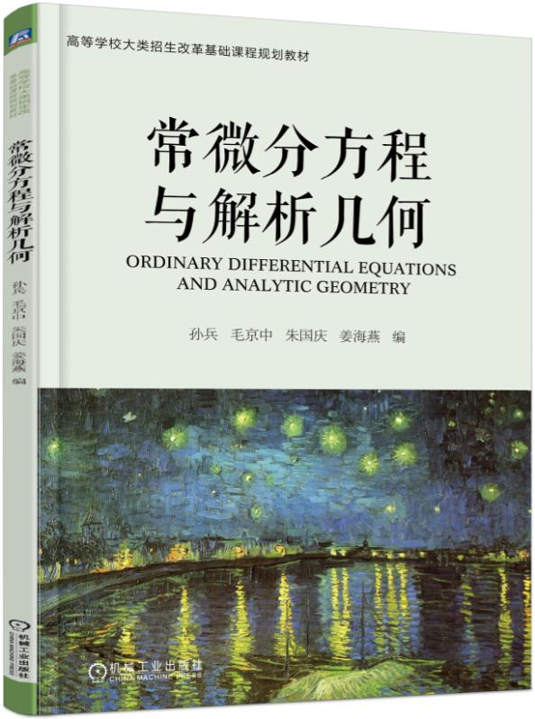

Teaching
Courses Taught
• 07000130 Mathematical Analysis B - I ('08-'09-1)
• 07000131 Mathematical Analysis B - II ('08-'09-2)
• 100171018 Mathematical Analysis - I ('18-'19-1)
• 100172103 Mathematical Analysis for Engineering - I ('20-'21-1; '21-'22-1;
'22-'23-1)
课程：100172103（本）工科数学分析 I
班级：自动化学院 06912201（自动化）、
计算机学院 07912201（数据科学与大数据技术）- 全英文教学专业；
北理鲍曼联合学院 40022201（自动化）、
40032201（能源与动力工程）、
40042201（光电信息科学与工程）- 中外合作办学；
睿信书院 63012228（信息科学技术）
授课：线下 - 周一、周三、周五3-4节（09:55-11:30）；
文萃楼F（原文教南楼）103（04-19周、周6学时，总计96学时）；
线上 - 腾讯会议；
[安排调整、
补充通知]
（教学运行与考务中心）
答疑：线下 - 周一、周三、周五（09:10-09:55、11:30-12:15、13:20-14:05）；
文萃楼E（原文二办公楼）518
或 文萃楼F103（04-19周、周9学时，总计144学时）；
线上 - i北理、
电子邮件
北京书院社区答疑：
2022年11月07日（周一）（12:00-14:00）、09日（周三）（12:00-14:00、18:00-20:00）,
南校区疏桐园B地下一层答疑讨论区
考前答疑：2022年12月27日（周二）（09:00-12:00、13:00-16:00）, 线上 - 腾讯会议（具体信息在i北理教学班群公布）
考试安排：2022年12月28日（周三）（15:30-17:30）、线上考试（在乐学平台查询线上考试须知）
进度：教学日历（2022-2023-1）、
教学大纲
网络平台：乐学、
延河课堂 -
（课程视频） 及
中国大学MOOC
• 100172203 Mathematical Analysis for Engineering - II ('18-'19-2; '19-'20-2; '20-'21-2; '21-'22-2; '22-'23-2)
课程：100172203（本）工科数学分析 II
授课：01-16周、周6学时，总计96学时
• 1700111 Comprehensive Theory of Control Systems ('21-'22-1)
• H0172103 Mathematical Analysis for Engineering - I ('16-'17-1; '17-'18-1)
• H0172203 Mathematical Analysis for Engineering - II ('16-'17-2)
• MTH17003 Mathematical Analysis for Engineering - I ('09-'10-1; '10-'11-1; '11-'12-1; '12-'13-1; '13-'14-1; '14-'15-1)
• MTH17004 Mathematical Analysis for Engineering - II ('09-'10-2; '10-'11-2; '11-'12-2; '13-'14-2; '14-'15-2; '15-'16-2)
• MTH17006 Calculus A - II ('12-'13-2)
Textbooks
| [5] Bing Sun, Solving Problems in
Mathematical Analysis for Engineering (Problem Solutions of Mathematical Analysis for Engineering),
Volume II, China Machine Press, Beijing, 2022, ISBN: 978-7-111-70180-4. (in Chinese)
(Approved Textbooks of Beijing Institute of Technology's 14th Five-Year Plan (2021))
孙兵，工科数学分析习题全解，下册，机械工业出版社，北京，2022. (北京理工大学“十四五”规划教材（2021年）)
（【孙兵，毛京中，朱国庆，姜海燕，工科数学分析，下册，机械工业出版社，北京，2018】的配套习题全解) (勘误可参考[4]中对应文件)
【内容简介_前言_目录_参考文献】、
【前往订购】
|
|
|
|
| [4] Bing Sun, Solving Problems in
Mathematical Analysis for Engineering (Problem Solutions of Mathematical Analysis for Engineering),
Volume I, China Machine Press, Beijing, 2022, ISBN: 978-7-111-70037-1. (in Chinese)
(Approved Textbooks of Beijing Institute of Technology's 14th Five-Year Plan (2021))
孙兵，工科数学分析习题全解，上册，机械工业出版社，北京，2022. (北京理工大学“十四五”规划教材（2021年）)
（【孙兵，毛京中，朱国庆，姜海燕，工科数学分析，上册，机械工业出版社，北京，2018】的配套习题全解)
【内容简介_前言_目录_参考文献】、
【勘误1-1】、
【前往订购】
|
|
|
|
| [3] Bing Sun, Jingzhong Mao, Guoqing Zhu and Haiyan Jiang,
Ordinary Differential Equations and
Analytic Geometry, China Machine Press, Beijing, 2018, ISBN: 978-7-111-60453-2. (in Chinese)
(Planned Textbooks of Basic Disciplines for Large Category Enrollment Reform in Colleges and Universities; Approved Textbooks
of Beijing Institute of Technology's 13th Five-Year Plan (2019))
孙兵，毛京中，朱国庆，姜海燕，常微分方程与解析几何，机械工业出版社，北京，2018.
(高等学校大类招生改革基础课程规划教材、北京理工大学“十三五”规划教材（2019年）) (习题答案可参考[4]、[5]，勘误可参考[1]、[2]中对应文件)
【样章试读】、
【目录】、
【内容简介_前言及参考文献】、
【配套课件_引用信息】、
【激活二维码】、
【前往订购】
|
|
 |
|
| [2] Bing Sun, Jingzhong Mao, Guoqing Zhu and Haiyan Jiang,
Mathematical Analysis for Engineering,
Volume Two, Textbooks of Basic Disciplines from World's Top Universities and Experts, China
Machine Press, Beijing, 2018, ISBN: 978-7-111-60288-0. (in Chinese)
(The National Key Publications Planning Project of China's 13th Five-Year Plan (2016-2020);
Approved Textbooks of Beijing Institute of Technology's 13th
Five-Year Plan (2018); Top-Quality Textbooks of Beijing Institute of Technology (2019); High-Quality Undergraduate Textbooks of
Colleges and Universities in Beijing (2021))
孙兵，毛京中，朱国庆，姜海燕，工科数学分析，下册，机械工业出版社，北京，2018.
(“十三五”国家重点出版物出版规划项目 名校名家基础学科系列、北京理工大学“十三五”规划教材（2018年）、北京理工大学精品教材（2019年）、北京高校“优质本科教材课件”（2021）)
(【孙兵，工科数学分析习题全解，下册，机械工业出版社，北京，2022】的配套教材)
【样章试读】、
【目录】、
【内容简介_前言及参考文献】、
【勘误】、
【配套课件_引用信息】、
【激活二维码】、
【前往订购】
|
|
 |
|
| [1] Bing Sun, Jingzhong Mao, Guoqing Zhu and Haiyan Jiang,
Mathematical Analysis for Engineering,
Volume One, Textbooks of Basic Disciplines from World's Top Universities and Experts, China
Machine Press, Beijing, 2018, ISBN: 978-7-111-58912-9. (in Chinese)
(The National Key Publications Planning Project of China's 13th Five-Year Plan (2016-2020);
Approved Textbooks of Beijing Institute of Technology's 13th
Five-Year Plan (2017); Top-Quality Textbooks of Beijing Institute of Technology (2019); High-Quality Undergraduate Textbooks of
Colleges and Universities in Beijing (2021))
孙兵，毛京中，朱国庆，姜海燕，工科数学分析，上册，机械工业出版社，北京，2018.
(“十三五”国家重点出版物出版规划项目 名校名家基础学科系列、北京理工大学“十三五”规划教材（2017年）、北京理工大学精品教材（2019年）、北京高校“优质本科教材课件”（2021）)
(【孙兵，工科数学分析习题全解，上册，机械工业出版社，北京，2022】的配套教材)
【样章试读】、
【目录】、
【内容简介_前言及参考文献】、
【勘误】、
【勘误1-5】、
【配套课件_引用信息】、
【激活二维码】、
【前往订购】
|
|
 |
|
Projects
• The Reform of Education and Teaching Project of School of Mathematics and Statistics, Beijing
Institute of Technology, May. 2022 through May. 2023 (Principal Investigator)
• The Reform of Education and Teaching Project of School of Mathematics and Statistics, Beijing
Institute of Technology, Jul. 2021 through Mar. 2022 (Principal Investigator)
• Top-Quality Network Courses Construction Branch Project, The Reform of Education and Teaching
Project of Beijing Institute of Technology, Feb. 2018 through Dec. 2018 (Principal Investigator)
• The Reform of Education and Teaching Project of Beijing Institute of Technology, Oct. 2017
through Sep. 2019 (Principal Investigator)
• Project on Graduate Teaching Team Building of Beijing Institute of Technology, Nov. 2016 through
Dec. 2018 (Participant)
• The Reform of Education and Teaching Project of School of Mathematics, Beijing Institute of
Technology, Beijing, Mar. 2013 through Mar. 2015 (Principal Investigator)
Go back to the index page!